KALIDASA’S ARTISTIC VIGILANCE
By K. CHANDRASEKHARAN
Poet
Rabindranath Tagore posed a question which he answered himself. ‘What is Art?’
was the question, and his answer was as follows: “Should we begin with a
definition? Definition of a thing which has life-growth is really limiting
one’s own vision in order to be able to see clearly. And clearness is not the
only or the most important aspect of truth. A bull’s-eye lantern view is a
clear view, but not a complete view. If we are to know a wheel in motion, we
need not mind if all its spokes cannot be counted. In our zeal for definition
we may lop off branches and roots of a tree to turn it into a log which is
easier to roll about from classroom to classroom and, therefore, suitable
for a text-book. But, because it allows a nakedly clear view of itself, it
cannot be said that a log gives a truer view of a tree as whole”.
To
say, therefore, that Kalidasa’s poetic output
followed a particular mode or pattern of artistry would be confining his
personality within a narrow compass. The main aim of all great art being the
expression of personality, and not of anything abstract or analytical, it
necessarily resorts to the language of picture and music in the process of
self-expression. Maybe the result often is beauty. Still, we should not imagine
that the creation of beauty is the object of art, because it can only be the
instrument, and not its complete or ultimate significance. So Kalidasa’s culture and mind, more than his poetry, needs
our careful study. No doubt, it is only through his poetry that we can realise it. It must be an education to realise
it and seriously apply ourselves to it. By our sympathy and understanding of
the poet we can accomplish a state of harmony with what he created. We will
thus have achieved the highest education, which does not merely provide us with
information of him and his achievements, but makes us one with him, and one
with the path of wisdom, which, for him, lay in the harmonious pursuit of the
different aims of life and the development of an integrated personality.
Being
a poet first and last, Kalidasa has no use for the obvious and the commonplace
in life. In his art we get the selection of things without which life would be
defective in its sumptuousness and its vision. But sumptuousness does not
connote for him mere prodigality. Nature is prodigal, but art does not merely
copy it. The technique of all the arts is only the process of selection and
elimination. Luxuriance is not art; the jungle is luxuriant. The more refined and
vigilant the artist, the fewer things he needs for his effects. The results are
judged by the economy of the means employed.
A
poet of the genuine order never sets out to imitate nature in the literal
sense. For him art and nature are incommensurables, and there can be no
one-to-one correspondence between them. By an arduous effort at contemplation,
and of concentration, the poet does in fact free, himself from nature. In order
to gain some measure of expressiveness and effectiveness for the vision he
wishes to convey, he may deliberately use his liberty to distort or even misdraw objects which he sees around.
Now
Kalidasa is known as a supreme poet of love. No doubt his treatment of Sringara has earned for him the widest
popularity. Further, the theme of love has a natural appeal to a wider
audience. Because of its general appeal, love should hardly be deemed an easy
or unexacting study for anybody to suceeed in. Music
as an analogy will be quite to the point. In spite of its universal appeal, it
has never been to its votary a matter of ordinary effort at mastery. On the
other hand, it is in the field of music that there is an insistent demand that
its adherence to strict standards should be maintained, with its wider
appreciation and greater popularity. Sringara
Rasa, it is needless to add, has met with a similar fate, with its
indiscriminate treatment by all and sundry, down the ages. Either the sentiment
is debased into lewdness and sexiness, or its physical aspect alone gets
portrayed through elaborate description. Indeed, many a poet of renown has
indulged in it to the verge of depriving himself and the reader of all
sensitiveness to suggestion, which is the hallmark of true art. Kalidasa alone
among the classical poets in Sanskrit maintained a poise,
even when absorbed in setting out love’s amours or displaying eroticism. In a
way he alone touched the heart of intensity while being vigilant to restrain
the mind from wallowing in sensuousness. His culture and traditional upbringing
in the epics taught him that the supreme merit of love lay not in its physical
attraction but in its sublimation. Otherwise, his Sakuntala
should have remained unredeemed of her dishonour
consequent upon her passionate yielding to the King’s offer of marriage. That
which was not lasting as long as it was only physical became purified and
serene when burnt of all its dross, passing through the fire of separation when
rejected by the King. Suffering and sorrow are the twin tokens of God’s
benediction upon humanity in its upward march.
Parvati’s beauty of form
is spurned by the God, but the winsome constancy of her heart lays the
foundation for an everlasting share both in the body and the spirit of that
same God. The poem Kumara Sambhava has, even
in its narration, limitless marks of dramatic art so as to justify the Drisye-Kavya’s quality pervading that of a Sravya-Kavya. It is said of the Ramayana that
 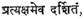 however to the past its episodes belong, in
the present they seem to live. The art of Kalidasa, especially in the scene of Uma’s approach to God Siva, after his relaxation from
austerities, is resplendent with not only the graphic pictorial representation
of the whole drama in the magic of colours but with
liquid sounds woven into an ensnaring melody that soothes the ear and
intoxicates the heart by turns:
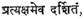 however to the past its episodes belong, in
the present they seem to live. The art of Kalidasa, especially in the scene of Uma’s approach to God Siva, after his relaxation from
austerities, is resplendent with not only the graphic pictorial representation
of the whole drama in the magic of colours but with
liquid sounds woven into an ensnaring melody that soothes the ear and
intoxicates the heart by turns:
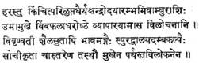
(God
Hara lost a wee bit of His balance of mind as He gazed at the bimba-fruit-like nether lip of Uma.
Even as the sea heaves at the sight of the rise of the full moon, His heart
expanded.
The
mountain-born also, by her movements and gestures, became more expressive of
her agitation. With down-cast eyes she stood, turning away with her arched neck
rendered more beautiful in that act.)
The
moment the attraction of the body gained a place in His heart, the God became
wary, and regained his normality, even as the poet seeks to restore in us our
equipoise which temporarily yielded to the phantom of delight visible in the
approaching of Uma towards Parameswara.
The beautiful drama to be enacted, with love’s inevitably unsmooth course,
seemed almost on the brink of accomplishment. With similar dramatic effect, the
poet stops the music of it all only to plunge us into the echoes
of sorrow’s wail over the death of Love.
In
the Scene in the Sakuntalam where the
King finds, to his heart’s fulfilment, Sakuntala left alone with him by her friends, the reader’s
anxiety to witness the intimacy of love in its mood of abandon
receives a check, as it were, when Sakuntala herself
warns the lover in his approaches:
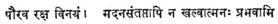
(King of Puru race! restrain yourself; love-smitten as
I am, I am not free yet to give myself to you.)
Love’s
sublimation in Kalidasa’s treatment has few parallels
elsewhere. However much two loving hearts may seek union and keep us
expectant all the time to witness the consummation of their natural
inclination, the poet is careful to remind the reader that the culture
of India has been always distinguished by the superior quality of restraint in
her women. This is tellingly expressed in his Kumara Sambhava.
After Siva has been won over by the steadfastness of Parvati’s
penances to attain Him, he exclaims his readiness to espouse her:
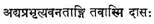
(I
am your slave from now onwards.)
But
Parvati, true to her inborn culture, sends word in
private to him:
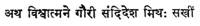
(To
Him, the soul of the Universe, Gowri through her companion sent word in
private: “My father, the King of mountains, must offer me. So let him be sought”.)
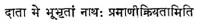
Again,
Kalidasa’s conception of true love as transcending an other considerations for those imbued with the highest
ideals is un-mistakably brought out in the Sakuntalam.
Marichi explains to Dushyanta
why the latter had to suffer a temporary loss of memory at the time of Sakuntala’s arrival at his court. Only a few moments back Sakuntala’s heart was disturbed by the offer of the King to
restore her lost ring. Her love could not brook such a flimsy token of love,
especially when its loss resulted in the King’s loss of memory:
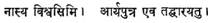
(I
cannot be sure of this ring. Let my lord himself wear it.)
After
Marichi revealed that the curse of Durvasa was the chief cause of the King’s unfortunate
blankness of memory, Sakuntala feels a heavy burden
lifted from her heart as she says to herself:
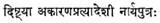
(Thank
God, My Lord has not been without real reason for his rejection of me.)
The
sigh she heaves indicates that her love cannot be satisfied with anything short
of utter sincerity and truth. This dialogue is introduced by the poet so skilfully, only to reassure us of the sublimity of her
love. Hence also his artistic vigilance not to ignore one of the enduring
messages of this great drama.
Apart
from scenes of restrained love and suggestive amours, there are descriptions of
lustful meetings of lovers, as in the nineteenth sarga
of Raghuvamsa where ‘Agnivarna’s love-pranks demonstrate the poet’s powers of
realism. The requisite atmosphere is created for such an extravagant outburst
of eroticism. Still, it is in the very middle of such an orgy of sensuousness
that we come across a passage which Suddenly
brings him, and us as well, back to a sense of normality and rectitude:
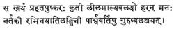
(The
King himself played on the drum with his dangling garlands and moving armlets,
while the denseuses, having been drawn away to him,
transgressed the rules of gestural art, with the
result that they had to hang their heads in shame before their masters sitting
on the sides.)
The
poet’s conception of the highly spiritual quality of the art of dance in
While
Sringara is the poet’s main interest,
he is attentive to the other rasas whenever
they claimed him. Shoka, Hasya and Adbhuta have
all received their due recognition in his poems and dramas. Perhaps no other
poet has employed the Viyogini vrittam to better effect than Kalidasa, and yet none
else has so marvellously restrained himself from utter surrender to the mood induced by it. The
sidelights and observations emanating from him during the long wails of Aja and Rati relieve the tedium
born of unending tears.
If
the Viyogini has distinguished Kalidasa
from the rest of poets, the Mandakranta has
raised him to lofty heights. The murmur of metre has
only to be listened to with close-shut eyes. The music inherent in its elongated
lines has been rendered richer in symphony by the love-anguish of the separated
lovers. Kalidasa has made a cloud’s progress through the vast country of
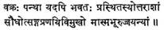
Just
for a diversion, let us look at Kalidasa’s sense of humour which rarely rouses laughter but creeps gently into
our hearts so that we enjoy its delicacy and softness in the silence of our
inner thoughts. In the Raghuvamsa, Rama
abandons Sita to the forest while she is in an advanced state of pregnancy. He
calls Lakshmana to his side and orders him to carry
out his command. Lakshmana’s generous nature would
not let him do the slightest harm to Sita so long as it was within his power to
avoid it. To save Sita from discomfort while travelling in the chariot, he
yokes horses “not of a turbulent nature” to it. 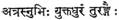 The poet thus makes us realise
the paradox of the situation; The resultant humour, especially as Sita’s
exile is imminent, is greater because of Lakshmana’s
attempt to save her from bodily discomfort in the face of the impending
catastrophe. There is also deep pathos in the situation. What poor satisfaction
to Lakshmana this, when he has been commanded to
execute the cruellest of orders!
Another
humorous situation, very suggestive, is that of Matali,
Indra’s charioteer answering King Dushyanta
who wonders why the wheels of the aerial car of Indra do not touch the earth
when decending. He says:
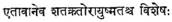
(This
is the only difference between your honoured self and
Indra.) He means to elevate Dushyanta, in courtier
fashion, so as to make him feel no embarrassment by the difference in status
between him and Indra. On the other hand, the reader is aware that Dushyanta’s powerful aid had been sought by Indra, when the
vanquishment of his enemies had to be effected. In
the present context of the king’s return after a great victory over Indra’s foes, Indra’s prowess
could not be deemed greater than the King’s. It is an innocent joke of Kalidasa
at the expense of the heavenly lords. Normally this little piece of humour may escape notice unless scanned carefully.
Sanskrit
poets have employed upama or simile to
such a great extent that not only has it not shown off to attraction but often
as an adornment or figure of speech it has become superfluous or redundant the
way it is employed indiscriminately. Kalidasa, on the contrary, is justly
famous for his similes which not only impress us by their appositeness but also
by their power of elucidation and illumination of the upameya.
Speaking of one of the scions of the Raghu race, Aditi, whose welfare projects for his subjects were all
worked out to perfection without any publicity whatever, the poet compares his
works to the developing grain inside the corn though the world never notices
its silent process of growth:
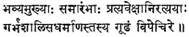
(The
king’s strivings, with circumspection, after good works for his subjects bore
fruit, as grain within corn ripening, though all the while unnoticed by
others.)
By
a tiny simile, much more effective elucidation of the subject is achieved than
by an elaborate explanation. One of Tagore’s ‘Kshanika’
lines contains a similar thought. He says: “The night opens the flower and
allows the day to get thanks.” Really genuine workers do not care for any
advertisement of themselves. They always silently finish their labours without ever informing the rest of the world what
they had performed for the gain of others.
The
poet’s care and skill in employing Alankaras
may by themselves engage our serious study. Space and time forbid any
lengthy or exhaustive survey of them. Kalidasa never tires us out, nor does he
try our patience in any manner. Brevity and wit go hand in hand to sustain our
unflagging interest even in his narration of an epic like the Ramayana. In
Compressing within five sargas
the entire Ramayana, he arrests our attention by his wonderful
compactness as well as selection of incidents.
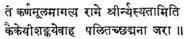
(Old age, through the
appearance of grey hairs at the temples, seemed careful to avoid being
overheard by Kaikeyi as it whispered into the King’s
ears: “Make Rama the ruler!”)
The
story of the frustrated coronation of Rama as Yuvaraja
is hit off so effectively with all the implications of court intrigue. The
re-telling of an elaborately detailed episode from the epic in the astoundingly
short span of a verse (sloka) convinces us of
the power of the poet’s control of material and his sense of proportion in
presentation.
Unless a poet knows
restraint, his art must suffer from lack of distinction in content and form.
Where one would write more, a single epithet or phrase or picture or imagery
does the work, with the enhanced value of gain in suggestion:
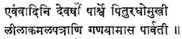
(While the sage of the
Devas spoke to her father, Parvati
standing near her father began with downcast eyes counting the petals of a
lotus flower she had brought for play.)
Without
saying in so many words how Parvati’s heart was
speedily collecting its own thoughts copcerning her
marriage with Siva, her preoccupation has been more expressively portrayed by
the picture of her counting listlessly the petals of a lotus. This particular
piece it has attained immortality at the hands of that arch-priest of Alankarikas, Anandavardhana,
as an undying example of Bhava-dhvani.
Leaf
and flower, dewdrop and glow-worm, lightning and rushing waters, deer and
peacock, have all invested the poet’s heart with a peculiar affinity with all
God’s creation; and his poems and dramas are replete with the frequency of
their appearances even as that of human characters. A truer Advaitin
than he has not trodden this land of ours. His natural claim of kinship
with-them makes no distinction between the tiniest, lowest or highest. If he
turns his eyes to the wavelets in the river, he cannot but fondly trace their
close relationship with the intermittently throbbing eyebrows of a sweetheart.
If he admires the heavy burden of a peacock’s feathers trailing on the ground,
his immediate reaction conjures up for him the dark flowing tresses of a
damsel. If Sakuntala approaches a creeper and seeks a
parting embrace from its encircling arms, she does it in no patronising
manner but quite as it behoves an intimate companion:
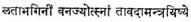
In
the anguished tidings of the Yaksha to the
cloud-messenger, he scarcely forgets the tender Mandara
tree.
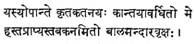
(Where in the garden you will find the young Mandara tree, reared like a foster-child by my Beloved,
which, on account of clusters of flowers bending the boughs, is easily reached
by our hands).
Arts and sciences too make their
welcome entry into his comprehensive ken. Music, both vocal and instrumental, enthuses him. The Veena and the Mridanga are recognised by him as
unrivalled for their charm. Dance and painting are his constant rejuvenators.
Especially the latter’s summation is reached in the unfolding of an entire play
devoted to the message of love through the most expressive of languages, the Abhinaya. The arts are not merely drawn upon
as aids to his fancy, but as very potential factors in their interplay on life.
Kings and sages, merchants and soldiers, danseuses and love-messengers, house-holders
and children, foresters and fishermen,–all move about functioning naturally in
his world. They subserve the very purpose of a rich
and complete life which the poet envisages for one and all. He draws upon them
all to get life on earth knit to Life Supreme.
Valmiki and Vyasa, no doubt, are great artists, with material as extensive and varied as the universe itself. Yet they comprehend everything, not with a look that holds and guards this, that, or the other detail or scene, but which from first to last remains pure contemplation, 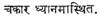 Kalidasa comes very near them in his vision of life always as whole and never compartmental. His poetry, like theirs, is Bharata-Varsha. It is the ripe fruit of his devotion to Indian culture and age-long tradition. It is the soul of a great people, not merely the emotion of a single individual. It is a systematic view of life, not merely a poetic mood. It is an enveloping culture, not merely a tune. It is an immortalising theme in humility, never a mere poetic interpretation.